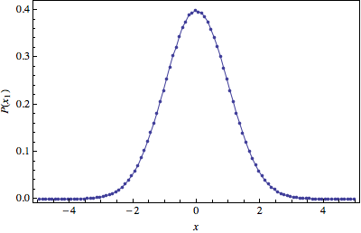

Mikhail Gaerlan
9 November 2015
The Metropolis algorithm can be used to generate a probabilty function as described by the following
$\displaystyle{P(\vec{x})\propto e^{-\frac{1}{2}(x _1^2+x _2^2+\cdots+x _{10}^2)}}$

The expectation values are very close to the exact results.